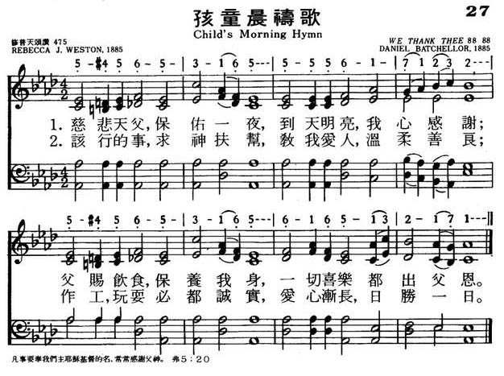

|
|
|
|
1 Father, we thank Thee for the night,
2 Help us to do the things we should,
|
027孩童晨祷歌
1.慈悲天父保佑一夜，到天明亮我心感谢；
父赐饮食,保养我身，一切喜乐都出父恩。 2.该行的事求父扶帮，教我爱人，温柔善良， 作工玩耍必都诚实，爱心渐长，日胜一日。 |
|
https://www.mred365.cn/szxg/7030.html

|
|
|
|
|

LX1310
Child'S Morning Hymn
027孩童晨祷歌
颂新
| Text: | Child's Morning Hymn |
| Author: | Rebecca J. Weston |
| Tune: | [Father, we thank Thee for the night] |
| Composer: | D. Batchellor |
| Short Name: | Rebecca J. Weston |
| Full Name: | Weston, Rebecca J. |
Tune Information
| Title: | HURSLEY |
| Meter: | 8.8.8.8 |
| Incipit: | 11117 12321 3333 |
| Key: | F Major |
| Source: | Katholisches Gesangbuch, Vienna, ca. 1774 |
| Copyright: | Public Domain |